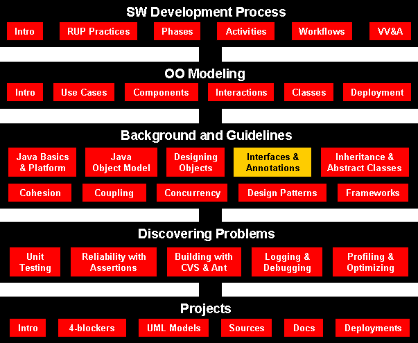

Software Engineering
Interfaces, Inner Classes, and Annotations
Course Map

Agenda
Using Interfaces for Code Reuse
Using Interfaces for Code Reuse
Using Interfaces for Code Reuse
Interfaces vs. Classes
An interface type is similar to a class, but there are several important
differences:
- All methods in an interface type are abstract; they don't have an
implementation
- All methods in an interface type are automatically public
- An interface type does not have instance fields
Generic DataSet for Measurable Objects
public class DataSet
{
. . .
public void add(Measurable x)
{
sum = sum + x.getMeasure();
if (count == 0 || maximum.getMeasure() < x.getMeasure())
maximum = x;
count++;
}
public Measurable getMaximum()
{
return maximum;
}
private double sum;
private Measurable maximum;
private int count;
}
Implementing an Interface Type
- Use implements keyword to indicate that a class implements an
interface type
public class BankAccount implements Measurable
{
public double getMeasure()
{
return balance;
}
// Additional methods and fields
}
- A class can implement more than one interface type
- Class must define all the methods that are required by all the
interfaces it implements
- Another example:
public class Coin implements Measurable
{
public double getMeasure()
{
return value;
}
. . .
}
UML Diagram of DataSet and Related Classes
- Interfaces can reduce the coupling between classes
- UML notation:
- Interfaces are tagged with a "stereotype" indicator «interface»
- A dotted arrow with a triangular tip denotes the "is-a" relationship
between a class and an interface
- A dotted line with an open v-shaped arrow tip denotes the "uses"
relationship or dependency
- Note that DataSet is decoupled from BankAccount
and Coin
Syntax: Defining an Interface
| |
public interface InterfaceName
{
// method signatures
} |
Example:
| |
public interface Measurable
{
double getMeasure();
} |
Purpose:
To define an interface and its method signatures. The methods are
automatically public. |
Syntax: Implementing an Interface
| |
public class ClassName
implements InterfaceName, InterfaceName, ...
{
// methods
// instance variables
} |
Example:
| |
public class BankAccount implements Measurable
{
// Other BankAccount methods
public double getMeasure()
{
// Method implementation
}
} |
Purpose:
To define a new class that implements the methods of an interface
|
File DataSetTester.java
Output
Average balance = 4000.0
Highest balance = 10000.0
Average coin value = 0.13333333333333333
Highest coin value = 0.25
Self Check
- Suppose you want to use the DataSet class to find the Country
object with the largest population. What condition must the Country
class fulfill?
- Why can't the add method of the DataSet class have a
parameter of type Object?
Answers
- It must implement the Measurable interface, and its getMeasure
method must return the population
- The Object class doesn't have a getMeasure method, and the
add method invokes the getMeasure method
Converting Between Class and Interface Types
- You can convert from a class type to an interface type, provided the class
implements the interface
- BankAccount account = new BankAccount(10000);
Measurable x = account; // OK
- Coin dime = new Coin(0.1, "dime");
Measurable x = dime; // Also OK
- Cannot convert between unrelated types
Measurable x = new Rectangle(5, 10, 20, 30); // ERROR
Because Rectangle doesn't implement Measurable
Casts
- Add coin objects to DataSet
DataSet coinData = new DataSet();
coinData.add(new Coin(0.25, "quarter"));
coinData.add(new Coin(0.1, "dime"));
. . .
Measurable max = coinData.getMaximum(); // Get the largest coin
- What can you do with it? It's not of type Coin
String name = max.getName(); // ERROR
- You need a cast to convert from an interface type to a class type
- You know it's a coin, but the compiler doesn't. Apply a cast:
Coin maxCoin = (Coin) max;
String name = maxCoin.getName();
- If you are wrong and max isn't a coin, the compiler throws an
exception
- Difference with casting numbers:
When casting number types you agree to the information loss
When casting object types you agree to that risk of causing an exception
Self Check
- Can you use a cast (BankAccount) x to convert a
Measurable variable x to a
BankAccount reference?
- If both BankAccount and Coin implement the Measurable
interface, can a Coin reference be converted to a BankAccount
reference?
Answers
- Only if x actually refers to a BankAccount
object.
- No–a Coin reference can be converted to a Measurable
reference, but if you attempt to cast that reference to a BankAccount,
an exception occurs.
Polymorphism
- Interface variable holds reference to object of a class that implements
the interface
Measurable x;
x = new BankAccount(10000);
x = new Coin(0.1, "dime");
Note that the object to which x refers doesn't have type
Measurable; the type of the object is some class that implements the
Measurable interface
- You can call any of the interface methods:
double m = x.getMeasure();
- Which method is called?
Polymorphism
- Depends on the actual object.
- If x refers to a bank account, calls BankAccount.getMeasure
- If x refers to a coin, calls Coin.getMeasure
- Polymorphism (many shapes): Behavior can vary depending on the actual type
of an object
- Called late binding: resolved at runtime
- Different from overloading; overloading is resolved by the compiler (early
binding)
Self Check
- Why is it impossible to construct a Measurable object?
- Why can you nevertheless declare a variable whose type is Measurable?
- What do overloading and polymorphism have in common? Where do they differ?
Answers
- Measurable is an interface. Interfaces have no fields and
no method implementations.
- That variable never refers to a Measurable object. It refers to an
object of some class–a class that implements the Measurable interface.
- Both describe a situation where one method name can denote multiple methods.
However, overloading is resolved early by the compiler, by looking at the types
of the parameter variables. Polymorphism is resolved late, by looking at the
type of the implicit parameter object just before making the call.
Using Interfaces for Callbacks
Using Interfaces for Callbacks
Using Interfaces for Callbacks
UML Diagram of Measurer Interface and Related Classes
- Note that the Rectangle class is decoupled from the Measurer
interface
File DataSet.java
File DataSetTester2.java
File Measurer.java
File RectangleMeasurer.java
Output
Average area = 616.6666666666666
Maximum area rectangle = java.awt.Rectangle[x=10,y=20,width=30,height=40]
Self Check
- Suppose you want to use the DataSet clas
to find the longest
String from a set of inputs. Why can't this work?
- How can you use the DataSet class of this section to find the
longest String
from a set of inputs?
- Why does the measure method of the Measurer interface have
one more parameter than the getMeasure method of the Measurable
interface?
Answers
- The String class doesn't implement the Measurable
interface.
- Implement a class StringMeasurer that implements the Measurer
interface.
- A measurer measures an object, whereas getMeasure measures
"itself", that is, the implicit parameter.
- Top-Level classes - direct members of packages, defined independently of
other types
- classes
- interfaces
- enumerated types
- Starting with 1.1, you can define classes as:
- members of other classes
- nested top-level classes
- static member types ("class types" - confusing) -
analogous to a class field
interfaces, enumerations, annotations are always implicitly static
- nonstatic member classes - analogous to an instance field
- locally within a block of statements
- local classes
- anonymously within an expression -
anonymous classes
- Code of inner classes and nested top-level classes can use simple names from
enclosing scopes, including private members.
- Static member types enables you to use a class to do package-like
organization
- Inner classes have a reference to an enclosing instance
- A common use for inner classes is to define event handler "call backs."
Inner Classes
Restrictions on Nested Top-Level Classes
- Top-level types can be declared with or without the public modifier
but they cannot be use private and protected modifiers
- A nested
top-level type can be declared with its own access control modifiers,
-
Interfaces, enumerations, annotations are always implicitly static, whether or
not static keyword appears in their definition
- Can
not have the same name as any of its enclosing classes
- Static member types
can be defined only within top-level classes and other static member types (not
within member, local, and anonymous classes)
- Nonstatic member classes is
declared as a member of a containing class or enumerated type without the static
keyword
Restrictions on Member Classes
- A member class can not have the same name as any containing class
- Member classes can not contain any static fields, methods, or classes
(except constants)
- Interfaces can not be defined as member classes
Restrictions on Local Classes
- A local class is visible only within a block that defines it
- Local classes cannot be declared
public, protected, or static
- Local classes can not contain any static fields, methods, or classes
(except constants)
- Interfaces can not be defined locally
- A local class like a member class cannot have the same name as any of t
enclosing class
- A local class can use the local variables, method parameters, and even
exception parameters that are in the scope, but only if those variables or
parameters are declared final
Syntax: Inner Classes
| |
Declared inside a method
(local class)class OuterClassName
{
method signature
{
. . .
class InnerClassName
{
// methods
// fields
}
. . .
}
. . .
}
| |
Declared inside the class
(member class)class OuterClassName
{
// methods
// fields
accessSpecifier class InnerClassName
{
// methods
// fields
}
. . .
} |
Purpose:
To define an inner class whose scope is restricted to a single method
(local class) or
the methods of a single class (member class). |
File DataSetTester3.java
Self Check
- Why would you use an inner class instead of a regular class?
- How many class files are produced when you compile the DataSetTester3
program?
Answers
- Inner classes are convenient for insignificant classes. Also,
their methods can access variables and fields from the surrounding scope.
- Four: one for the outer class, one for the inner class, and two for the
DataSet
and Measurer classes.
Anonymous Classes
- An entity is anonymous if it does not have a name.
Coin aCoin = new Coin(0.1, "dime");
data.add(aCoin);
or
data.add(new Coin(0.1, "dime"));
- Create an instance of the anonymous class implementing the Measurer
interface:
public static void main(String[] args) {
// Construct an object of an anonymous class
Measurer m = new Measurer()
// Class definition starts here
{
public double measure(Object obj) {
Rectangle rec = (Rectangle)obj;
double area = rec.getWidth() * rec.getHight();
return area;
}
};
DataSet data = new DataSet(m);
. . .
}
When to use Anonymous Classes
- Anonymous and local classes share the same restrictions
- The class has a very short body
- No constructors, can use constructors of its superclass
- Only one instance of the class is needed
- The class is used right after it is defined
- The name of the class does not make your code any easier to understand
- if a name following the new keyword is the name of a class, the anonymous
class is a subclass of the named class
- if a name following new specifies an interface, the anonymous class
implements that interface and extends Object
Syntax: Anonymous Classes
| |
new class-Name ( [argument-list] )
{
class-body
}
or
new interface-Name ()
{
class-body
}
|
Example:
| |
Measurer m = new Measurer()
{
public double measure(Object obj) {
Rectangle rec = (Rectangle)obj;
double area = rec.getWidth() * rec.getHight();
return area;
}
}; |
Purpose:
To define a one-shot class exactly where it is needed. |
Processing Timer Events
- javax.swing.Timer generates equally spaced timer events
- Useful whenever you want to have an object updated in regular intervals
- Sends events to action listener
public interface ActionListener
{
void actionPerformed(ActionEvent event);
}
- Define a class that implements the ActionListener interface
class MyListener implements ActionListener
{
void actionPerformed(ActionEvent event)
{
// This action will be executed at each timer
event
Place listener action here
}
}
- Add listener to timer
MyListener listener = new MyListener();
Timer t = new Timer(interval, listener);
t.start();
Example: Countdown
- Example: a timer that counts down to zero
Def
- One second delay between printouts
File TimerTester.java
Self Check
- Why does a timer require a listener object?
- How many times is the actionPerformed method called in the
preceding program?
Answers
- The timer needs to call some method whenever the time interval
expires. It calls the actionPerformed method of the listener object.
- It depends. The method is called once per second. The first eleven times, it
prints a message. The remaining times, it exits silently. The timer is only
terminated when the user quits the program.
Accessing Surrounding Variables
Accessing Surrounding Variables
- The actionPerformed method can access variables from the surrounding
scope, like this:
public static void main(String[] args)
{
. . .
final Rectangle box = new Rectangle(5, 10, 20, 30);
class Mover implements ActionListener
{
public void actionPerformed(ActionEvent event)
{
// Move the rectangle
box.translate(1, 1);
}
}
. . .
}
- Local variables that are accessed by an inner-class method must be
declared as final
- Inner class can access fields of surrounding class that belong to the
object that constructed the inner class object
- An inner class object created inside a static method can only access
static surrounding fields
File TimerTester2.java
File TimerTester3.java
Output
java.awt.Rectangle[x=6,y=11,width=20,height=30]
java.awt.Rectangle[x=7,y=12,width=20,height=30]
java.awt.Rectangle[x=8,y=13,width=20,height=30]
. . .
java.awt.Rectangle[x=28,y=33,width=20,height=30]
java.awt.Rectangle[x=29,y=34,width=20,height=30]
Last box position: java.awt.Rectangle[x=29,y=34,width=20,height=30]
Self Check
- Why would an inner class method want to access a variable from a
surrounding scope?
- If an inner class accesses a local variable from a surrounding scope, what
special rule applies?
Answers
- Direct access is simpler than the alternative–passing the
variable as a parameter to a constructor or method.
- The local variable must be declared as final.
Why Inner Classes?
- Typically, the inner class inherits from a class or implements an interface,
and the code in the inner class manipulates the outer class object.
- Each inner class can independently inherit from an implementation.
Thus, the inner class is not limited by whether the outer class
is already inheriting from an implementation.
- The inner class can have multiple instances, each with its own state
information that is independent of the information in the outer class object.
-
In a single outer class you can have several inner classes, each of which
implement the same interface or inherit from the same class in a different way.
-
The point of creation of the inner class object is not tied to the creation of the outer class object.
-
There is no potentially confusing “is-a” relationship with the inner class; it’s a separate entity.
-
Interfaces and inner classes are more sophisticated concepts than what you’ll find in many OOP languages;
for example, there’s nothing like them in C++.
-
Together, they solve the same problem that C++ attempts to solve with its
multiple inheritance (MI) feature. However, MI in C++ turns out to be rather difficult to use, whereas Java
interfaces and inner classes are, by comparison, much more accessible.
-
Although the features themselves are reasonably straightforward, the use of
these features is a design issue, much the same as polymorphism.
Metadata can be used to create documentation, to track down dependencies in
code, and even to perform rudimentary compile-time checking.
- Annotations take the form of an "at" sign (
@), followed by
the annotation name. Then, you supply data to the annotation -- when data is
required -- in name=value pairs.
- An annotation associates arbitrary information or metadata wit Java
program element (
AnnotationElement )
- Annotations are modifiers (behave like public or final) you can add to
your code and apply to package declarations, type declarations,
constructors, methods, fields, parameters, and variables.
- Java includes three built-in annotation types and four
meta-annotations, and also supports
custom annotations you can write yourself.
- Annotations never affect the way a Java program runs, but they
may affect things like compiler warnings or the behavior of auxiliary tools
such as documentation generation, stub generation, and so forth.
Annotation formats:
- Marker annotations have no variables. The annotation simply
appears, identified by name, with no additional data supplied. For example,
@MarkerAnnotation is a marker annotation. It includes no data,
just the annotation name.
- Single-value annotations are similar to markers, but provide a
single piece of data. Because only a single bit of data is supplied, you can
use a shortcut syntax (assuming the annotation type is defined to accept
this syntax):
@SingleValueAnnotation("my data"). This should
look a lot like a normal Java method call, aside from the @
sign.
- Multivalue annotations have multiple data members. As a result, you
must use a longhand syntax (and the annotation doesn't look quite so much like
a normal Java method anymore):
@FullAnnotation(var1="data value 1",
var2="data value 2", var3="data value 3").
The Override, Deprecated, and SuppressWarnings Annotation Types
public class OverrideTester {
public OverrideTester() { }
@Override
public String toString() {
return super.toString() + " [Override Tester Implementation]";
}
@Override
public int hashCode() {
return toString().hashCode();
}
}
public class DeprecatedClass {
@Deprecated public void doSomething() {
// some code
}
public void doSomethingElse() {
// This method presumably does what doSomething() does, but better
}
}
@SuppressWarnings(value={"unchecked"})
public void nonGenericsMethod() {
List wordList = new ArrayList(); // no typing information on the List
wordList.add("foo"); // causes error on list addition
}
Defining and Using Marker Annotation Types
- Defining
/**
* Marker annotation to indicate that a method or class
* is still in progress.
*/
public @interface InProgress { }
- Using
@InProgress
public void calculateInterest(float amount, float rate) {
// Need to finish this method later
}
Defining Members of Annotation
Types
- The members of annotations are declared in annotation type as noargument
methods
- The method name and return type define the name and type of the member
- You don't define a member variable and then provide accessor and mutator
methods.
- An annotation appearing on a program element includes name-vale pairs
/**
* Annotation type to indicate a task still needs to be
* completed.
*/
public @interface TODO {
String value();
}
Shorthand
version (single-value annotations):
@InProgress
@TODO("Figure out the amount of interest per month")
public void calculateInterest(float amount, float rate) {
// Need to finish this method later
}
The shorthand version is available only if the annotation type has a
single-member variable named value.
Longhand version (multivalue annotations):
@InProgress
@TODO(value="Figure out the amount of interest per month")
public void calculateInterest(float amount, float rate) {
// Need to finish this method later
}
Defining Default Values in Annotation
Types
public @interface GroupTODO {
public enum Severity { CRITICAL, IMPORTANT, TRIVIAL, DOCUMENTATION };
Severity severity() default
Severity.IMPORTANT;
String item();
String assignedTo();
String dateAssigned();
}
Overriding default values
@GroupTODO(
severity=GroupTODO.Severity.DOCUMENTATION,
item="Need to explain how this rather unusual method works",
assignedTo="Mike Sobolewski",
dateAssigned="04/10/2006"
)
public void reallyConfusingMethod(int codePoint) {
// Really weird code implementation
}
Annotating an Annotation - Meta-annotations
- Meta-annotations
java.lang.annotation.Target
public enum ElementType {
TYPE, // Class, interface, or enum (but not annotation)
FIELD, // Field (including enumerated values)
METHOD, // Method (does not include constructors)
PARAMETER, // Method parameter
CONSTRUCTOR, // Constructor
LOCAL_VARIABLE, // Local variable or catch clause
ANNOTATION_TYPE, // Annotation Types (meta-annotations)
PACKAGE // Java package
}java.lang.annotation.Retention
public enum RetentionPolicy {
SOURCE, // Annotation is discarded by the
compiler
CLASS, // Annotation is stored in the class file,
but ignored by the VM
RUNTIME // Annotation is stored in the class
file and read by the VM
}java.lang.annotation.Documentedjava.lang.annotation.Inherited
Using Target Meta-annotation
import java.lang.annotation.ElementType;
import java.lang.annotation.Target;
/**
* Annotation type to indicate a task still needs to be completed
*/
@Target({ElementType.TYPE,
ElementType.METHOD,
ElementType.CONSTRUCTOR,
ElementType.ANNOTATION_TYPE})
public @interface TODO {
String value();
}
- Now the Java compiler will apply
TODO only to types,
methods, constructors, and other annotation types.
- This helps you ensure that nobody else takes your annotation type and
misapplies it
Using Retention Meta-annotation
@Retention(RetentionPolicy.SOURCE)
public @interface SuppressWarnings {
// annotation type body
}
- The shorthand form used here, because
Retention has a
single-member variable.
- If you want the retention to be
RetentionPolicy.CLASS, you
don't have to do a thing, because that's the default behavior.
Using Documented Meta-annotation
-
Documented indicates that an annotation should appear
in the Javadoc for a class.
- By default, annotations are not included in Javadoc pages
import java.lang.annotation.Documented;
import java.lang.annotation.Retention;
import java.lang.annotation.RetentionPolicy;
/**
* Marker annotation to indicate that a method or class
* is still in progress.
*/
@Documented
@Retention(RetentionPolicy.RUNTIME)
public @interface InProgress { }
RUNTIME is a required aspect of using the
Documented annotation type. - Javadoc loads its information from class files (not source files), using
a virtual machine.
- The only way to ensure that this VM gets the information for producing
Javadoc from these class files is to specify the retention of
RetentionPolicy.RUNTIME.
Using Inherited Meta-annotation
- Suppose that you mark a class as being in progress, through your own
custom
InProgress annotation.
- This will even show up in the Javadoc if you've correctly applied the
Documented meta-annotation.
- Now, suppose you write a new class and extend the in-progress class.
- But remember that the superclass is in progress.
- If you use the subclass, and even look at its documentation, you get no
indication that anything is incomplete.
- You must use the
Inherited meta-annotation to specify the
behavior you want:
import java.lang.annotation.Documented;
import java.lang.annotation.Inherited;
import java.lang.annotation.Retention;
import java.lang.annotation.RetentionPolicy;
/**
* Marker annotation to indicate that a method or class
* is still in progress.
*/
@Documented
@Inherited
@Retention(RetentionPolicy.RUNTIME)
public @interface InProgress { }
- With the addition of
@Inherited, you'll see the
InProgress annotation show up on subclasses of annotated classes.
- The default is not to inherit
- For example, the
TODO annotation wouldn't (and
shouldn't) be propagated.
Annotations and Reflection
- Reading runtime-visible annotations using
java.lang.reflect
- The interface
java.lang.reflect.AnnotaedElement represents a program element that can be queried for
annotations
- Testing for existing runtime annotations
import java.lang.reflect.*;
Class c = ConfusingClass.class;
Method m = c.getMethod("reallyConfusingMethod",
int.class);
boolean isGroupTODO = m.isAnnotationPresnet();
@Retention(RetentionPolicy.RUNTIME)
@GroupTODO(
severity=GroupTODO.Severity.DOCUMENTATION,
item="Need to explain how this rather unusual method works",
assignedTo="Mike Sobolewski",
dateAssigned="07/30/2004"
)
public void reallyConfusingMethod(int codePoint) {
// Really weird code implementation
}
- Finding values of annotations
import java.lang.reflect.*;
AnnotationElement target = ConfusingClass.class; // the type to query
// Ask for @GroupTODO annotation as an object that implements GroupTODO
GroupTODO annotation = target.getAnnotation(GroupTODO.class);
// Ask for needed annotation values
String responsible = annotation.assignedTo();
String whatToDo = annotation.item();
String date = annotation.dateAssigned();
Tie It All Together - Build a Simple Annotation-based Test Framework
- A marker annotation type
import java.lang.annotation.*;
/**
* Indicates that the annotated method is a test method.
* This annotation should be used only on parameterless static methods.
*/
@Retention(RetentionPolicy.RUNTIME)
@Target(ElementType.METHOD)
public @interface Test { }
- A sample program, some of whose methods are annotated with the above
interface:
public class Foo {
@Test public static void m1() { }
public static void m2() { }
@Test public static void m3() {
throw new RuntimeException("Boom");
}
public static void m4() { }
@Test public static void m5() { }
public static void m6() { }
@Test public static void m7() {
throw new RuntimeException("Crash");
}
public static void m8() { }
}
- Here is the testing tool:
import java.lang.reflect.*;
public class RunTests {
public static void main(String[] args) throws Exception {
int passed = 0, failed = 0;
for (Method m : Class.forName(args[0]).getMethods()) {
if (m.isAnnotationPresent(Test.class)) {
try {
m.invoke(null);
passed++;
} catch (Throwable ex) {
System.out.printf("Test %s failed: %s %n", m, ex.getCause());
failed++;
}
}
}
System.out.printf("Passed: %d, Failed %d%n", passed, failed);
}
}
- Here is how it looks when you run the testing tool on the
Foo
program (above):
$ java RunTests Foo
Test public static void Foo.m3() failed: java.lang.RuntimeException: Boom
Test public static void Foo.m7() failed: java.lang.RuntimeException: Crash
Passed: 2, Failed 2
@Retention(value=RUNTIME)
@Target(value=METHOD)
public @interface Test
- The
Test annotation tells JUnit that the public void
method to which it is attached can be run as a test case.
- To run the method, JUnit first constructs a fresh instance of the class
then invokes the annotated method.
- Any exceptions thrown by the test will be reported by JUnit as a
failure.
- If no exceptions are thrown, the test is assumed to have succeeded.
A simple test looks like this:
public class Example {
@Test public void method() {
System.out.println("Hello");
}
}
- The
Test annotation supports two optional parameters. The
first, expected, declares that a test method should throw an
exception. If it doesn't throw an exception or if it throws a different
exception than the one declared, the test fails. For example, the following
test succeeds:
@Test(expected=IndexOutOfBoundsException.class) public void
outOfBounds() {
new ArrayList<Object>().get(1);
}
- The second optional parameter,
timeout, causes a test to
fail if it takes longer than a specified amount of clock time (measured in
milliseconds). The following test fails:
@Test(timeout=100) public void infinity() {
for(;;);
}
- Methods annotated with
@Test that are also annotated with
@Ignore will not be executed as tests.
- T annotate a test fixture use:
@Before, @After, @BeforeClass, @AfterClass
-
JUnit provides tools to define
the suite to be run and to display its results. To run tests and see the results
on the console, run:
public static void main(String args[]) {
org.junit.runner.JUnitCore.main("Example");
}
Use this invocation for programmatic testing:
public static boolean wasSuccessful() {
Result result = org.junit.runner.JUnitCore.runClasses(Example.class);
return result.wasSuccessful();
}